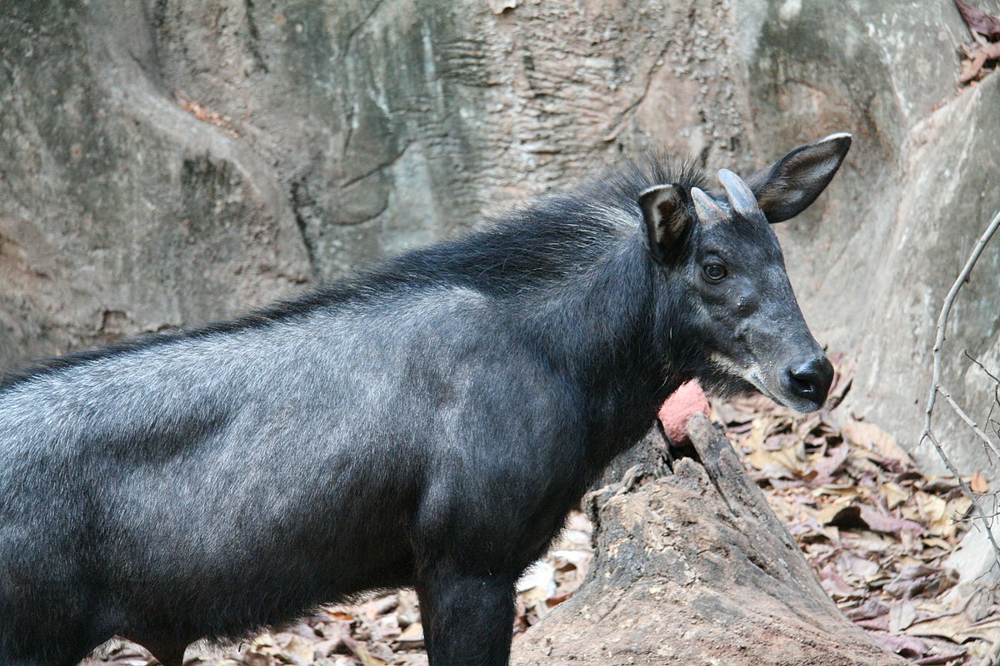
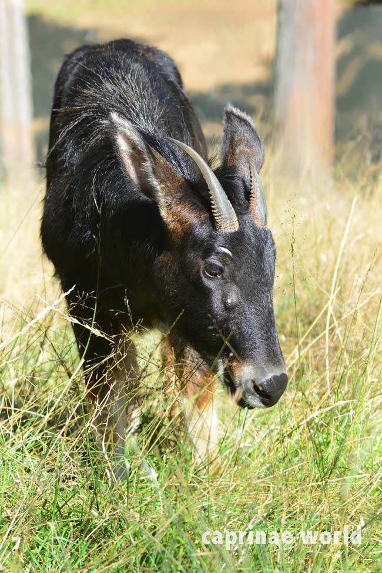
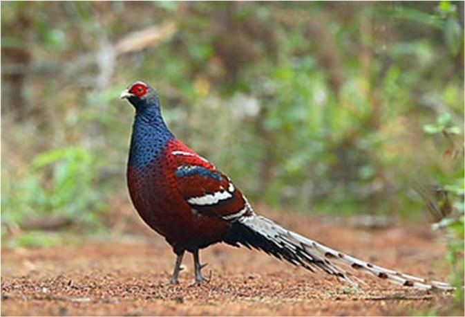
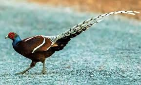
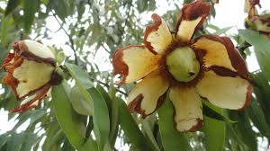
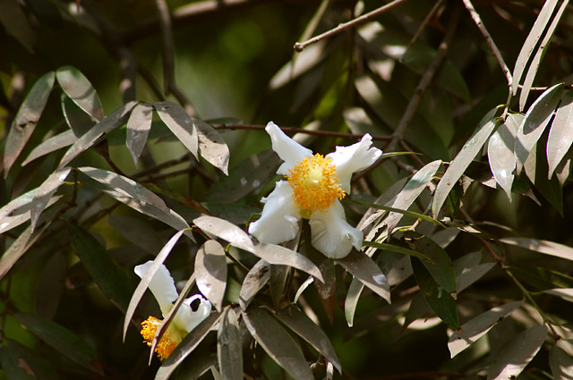

State Animal:
Phayre's leaf monkey


The Himalayan serow is a goat-antelope native to the eastern Himalayas and eastern and southeastern Bangladesh.
State Bird:
Mrs.Hume's Pheasant


Mrs. Hume's pheasant, also known as Hume's pheasant or bar-tailed pheasant, is a large, up to 90 cm long.
State Tree:
Indian rose chestnut


Mesua ferrea, the Ceylon ironwood, Indian rose chestnut, or cobra saffron, is a species in the family Calophyllaceae.